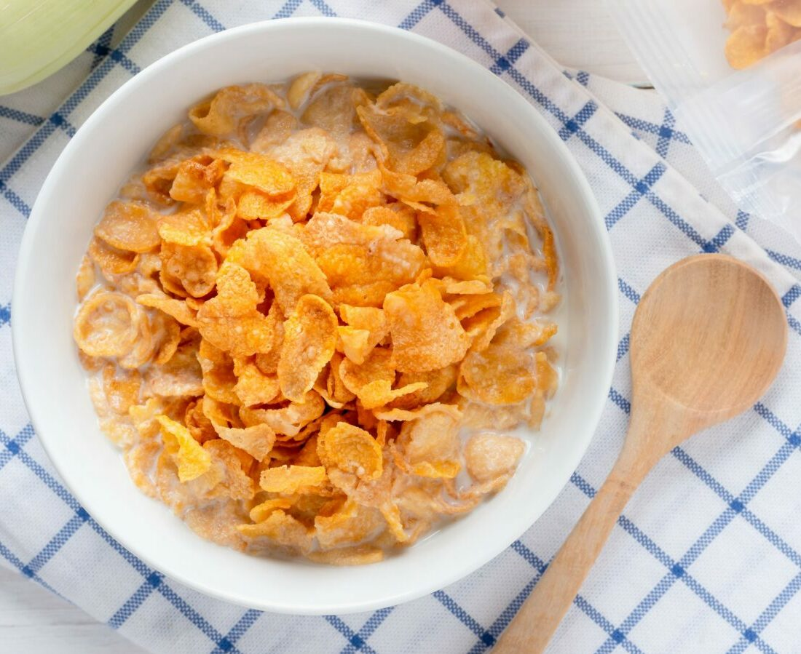

Cereal

Bowl of Cereal
This is your go to morning breakfast meal when you are in a rush or just lazy like myself. I highly reccomend staying away from
sugary cereals.
Ingredients
- favorite cereal
- milk
- almond milk alternative to milk
Steps
- Gather Ingredients
- pour cereal into bowl
- pour milk into bowl
- eat with spoon ensuring you have both milk and cereal with each bite